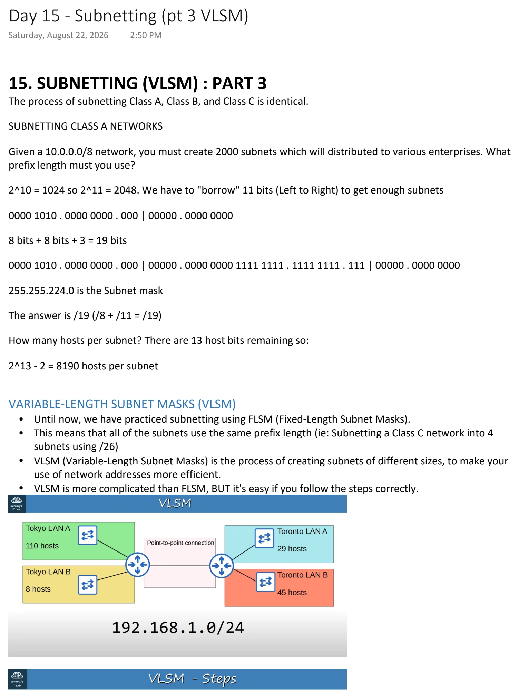
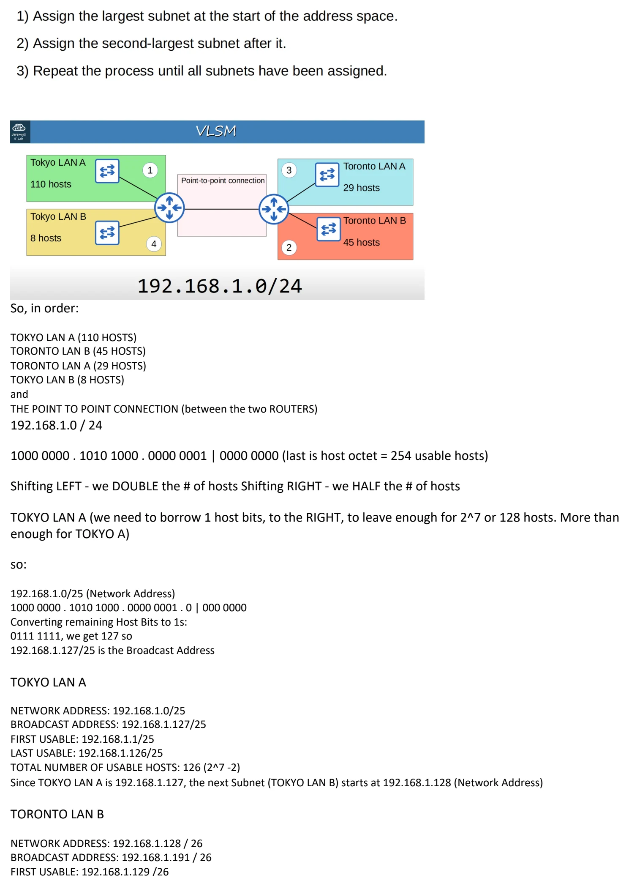
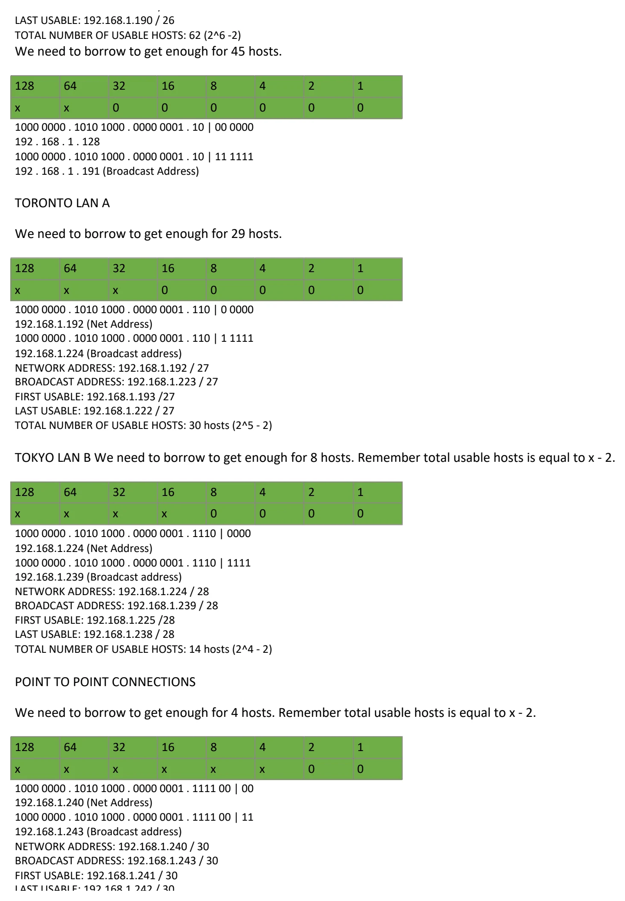

Subnetting (pt 3 VLSM)
Download original PDF


Text view — Subnetting (pt 3 VLSM)
Extracted from the original export. Diagrams and some formatting appear in the notes above.
Day 15 - Subnetting (pt 3 VLSM) Saturday, August 22, 2026 2:50 PM 15. SUBNETTING (VLSM) : PART 3 The process of subnetting Class A, Class B, and Class C is identical. SUBNETTING CLASS A NETWORKS Given a 10.0.0.0/8 network, you must create 2000 subnets which will distributed to various enterprises. What prefix length must you use? 2^10 = 1024 so 2^11 = 2048. We have to "borrow" 11 bits (Left to Right) to get enough subnets 0000 1010 . 0000 0000 . 000 | 00000 . 0000 0000 8 bits + 8 bits + 3 = 19 bits 0000 1010 . 0000 0000 . 000 | 00000 . 0000 0000 1111 1111 . 1111 1111 . 111 | 00000 . 0000 0000 255.255.224.0 is the Subnet mask The answer is /19 (/8 + /11 = /19) How many hosts per subnet? There are 13 host bits remaining so: 2^13 - 2 = 8190 hosts per subnet VARIABLE-LENGTH SUBNET MASKS (VLSM) • Until now, we have practiced subnetting using FLSM (Fixed-Length Subnet Masks). • This means that all of the subnets use the same prefix length (ie: Subnetting a Class C network into 4 subnets using /26) • VLSM (Variable-Length Subnet Masks) is the process of creating subnets of different sizes, to make your use of network addresses more efficient. • VLSM is more complicated than FLSM, BUT it's easy if you follow the steps correctly. So, in order: TOKYO LAN A (110 HOSTS) TORONTO LAN B (45 HOSTS) TORONTO LAN A (29 HOSTS) TOKYO LAN B (8 HOSTS) and THE POINT TO POINT CONNECTION (between the two ROUTERS) 192.168.1.0 / 24 1000 0000 . 1010 1000 . 0000 0001 | 0000 0000 (last is host octet = 254 usable hosts) Shifting LEFT - we DOUBLE the # of hosts Shifting RIGHT - we HALF the # of hosts TOKYO LAN A (we need to borrow 1 host bits, to the RIGHT, to leave enough for 2^7 or 128 hosts. More than enough for TOKYO A) so: 192.168.1.0/25 (Network Address) 1000 0000 . 1010 1000 . 0000 0001 . 0 | 000 0000 Converting remaining Host Bits to 1s: 0111 1111, we get 127 so 192.168.1.127/25 is the Broadcast Address TOKYO LAN A NETWORK ADDRESS: 192.168.1.0/25 BROADCAST ADDRESS: 192.168.1.127/25 FIRST USABLE: 192.168.1.1/25 LAST USABLE: 192.168.1.126/25 TOTAL NUMBER OF USABLE HOSTS: 126 (2^7 -2) Since TOKYO LAN A is 192.168.1.127, the next Subnet (TOKYO LAN B) starts at 192.168.1.128 (Network Address) TORONTO LAN B NETWORK ADDRESS: 192.168.1.128 / 26 BROADCAST ADDRESS: 192.168.1.191 / 26 FIRST USABLE: 192.168.1.129 /26 LAST USABLE: 192.168.1.190 / 26 TOTAL NUMBER OF USABLE HOSTS: 62 (2^6 -2) We need to borrow to get enough for 45 hosts. 128 64 32 16 8 4 2 1 x x 0 0 0 0 0 0 1000 0000 . 1010 1000 . 0000 0001 . 10 | 00 0000 192 . 168 . 1 . 128 1000 0000 . 1010 1000 . 0000 0001 . 10 | 11 1111 192 . 168 . 1 . 191 (Broadcast Address) TORONTO LAN A We need to borrow to get enough for 29 hosts. 128 64 32 16 8 4 2 1 x x x 0 0 0 0 0 1000 0000 . 1010 1000 . 0000 0001 . 110 | 0 0000 192.168.1.192 (Net Address) 1000 0000 . 1010 1000 . 0000 0001 . 110 | 1 1111 192.168.1.224 (Broadcast address) NETWORK ADDRESS: 192.168.1.192 / 27 BROADCAST ADDRESS: 192.168.1.223 / 27 FIRST USABLE: 192.168.1.193 /27 LAST USABLE: 192.168.1.222 / 27 TOTAL NUMBER OF USABLE HOSTS: 30 hosts (2^5 - 2) TOKYO LAN B We need to borrow to get enough for 8 hosts. Remember total usable hosts is equal to x - 2. 128 64 32 16 8 4 2 1 x x x x 0 0 0 0 1000 0000 . 1010 1000 . 0000 0001 . 1110 | 0000 192.168.1.224 (Net Address) 1000 0000 . 1010 1000 . 0000 0001 . 1110 | 1111 192.168.1.239 (Broadcast address) NETWORK ADDRESS: 192.168.1.224 / 28 BROADCAST ADDRESS: 192.168.1.239 / 28 FIRST USABLE: 192.168.1.225 /28 LAST USABLE: 192.168.1.238 / 28 TOTAL NUMBER OF USABLE HOSTS: 14 hosts (2^4 - 2) POINT TO POINT CONNECTIONS We need to borrow to get enough for 4 hosts. Remember total usable hosts is equal to x - 2. 128 64 32 16 8 4 2 1 x x x x x x 0 0 1000 0000 . 1010 1000 . 0000 0001 . 1111 00 | 00 192.168.1.240 (Net Address) 1000 0000 . 1010 1000 . 0000 0001 . 1111 00 | 11 192.168.1.243 (Broadcast address) NETWORK ADDRESS: 192.168.1.240 / 30 BROADCAST ADDRESS: 192.168.1.243 / 30 FIRST USABLE: 192.168.1.241 / 30 LAST USABLE: 192.168.1.242 / 30 TOTAL NUMBER OF USABLE HOSTS: 2 hosts (2^2 - 2) ADDITIONAL PRACTICE FOR SUBNETTING http://www.subnettingquestions.com http://subnetting.org https://subnettingpractice.com *** Preferred site *** Day 15 - Subnetting (pt 3 VLSM) Saturday, August 22, 2026 2:50 PM 15. SUBNETTING (VLSM) : PART 3 The process of subnetting Class A, Class B, and Class C is identical. SUBNETTING CLASS A NETWORKS Given a 10.0.0.0/8 network, you must create 2000 subnets which will distributed to various enterprises. What prefix length must you use? 2^10 = 1024 so 2^11 = 2048. We have to "borrow" 11 bits (Left to Right) to get enough subnets 0000 1010 . 0000 0000 . 000 | 00000 . 0000 0000 8 bits + 8 bits + 3 = 19 bits 0000 1010 . 0000 0000 . 000 | 00000 . 0000 0000 1111 1111 . 1111 1111 . 111 | 00000 . 0000 0000 255.255.224.0 is the Subnet mask The answer is /19 (/8 + /11 = /19) How many hosts per subnet? There are 13 host bits remaining so: 2^13 - 2 = 8190 hosts per subnet VARIABLE-LENGTH SUBNET MASKS (VLSM) • Until now, we have practiced subnetting using FLSM (Fixed-Length Subnet Masks). • This means that all of the subnets use the same prefix length (ie: Subnetting a Class C network into 4 subnets using /26) • VLSM (Variable-Length Subnet Masks) is the process of creating subnets of different sizes, to make your use of network addresses more efficient. • VLSM is more complicated than FLSM, BUT it's easy if you follow the steps correctly. So, in order: TOKYO LAN A (110 HOSTS) TORONTO LAN B (45 HOSTS) TORONTO LAN A (29 HOSTS) TOKYO LAN B (8 HOSTS) and THE POINT TO POINT CONNECTION (between the two ROUTERS) 192.168.1.0 / 24 1000 0000 . 1010 1000 . 0000 0001 | 0000 0000 (last is host octet = 254 usable hosts) Shifting LEFT - we DOUBLE the # of hosts Shifting RIGHT - we HALF the # of hosts TOKYO LAN A (we need to borrow 1 host bits, to the RIGHT, to leave enough for 2^7 or 128 hosts. More than enough for TOKYO A) so: 192.168.1.0/25 (Network Address) 1000 0000 . 1010 1000 . 0000 0001 . 0 | 000 0000 Converting remaining Host Bits to 1s: 0111 1111, we get 127 so 192.168.1.127/25 is the Broadcast Address TOKYO LAN A NETWORK ADDRESS: 192.168.1.0/25 BROADCAST ADDRESS: 192.168.1.127/25 FIRST USABLE: 192.168.1.1/25 LAST USABLE: 192.168.1.126/25 TOTAL NUMBER OF USABLE HOSTS: 126 (2^7 -2) Since TOKYO LAN A is 192.168.1.127, the next Subnet (TOKYO LAN B) starts at 192.168.1.128 (Network Address) TORONTO LAN B NETWORK ADDRESS: 192.168.1.128 / 26 BROADCAST ADDRESS: 192.168.1.191 / 26 FIRST USABLE: 192.168.1.129 /26 LAST USABLE: 192.168.1.190 / 26 TOTAL NUMBER OF USABLE HOSTS: 62 (2^6 -2) We need to borrow to get enough for 45 hosts. 128 64 32 16 8 4 2 1 x x 0 0 0 0 0 0 1000 0000 . 1010 1000 . 0000 0001 . 10 | 00 0000 192 . 168 . 1 . 128 1000 0000 . 1010 1000 . 0000 0001 . 10 | 11 1111 192 . 168 . 1 . 191 (Broadcast Address) TORONTO LAN A We need to borrow to get enough for 29 hosts. 128 64 32 16 8 4 2 1 x x x 0 0 0 0 0 1000 0000 . 1010 1000 . 0000 0001 . 110 | 0 0000 192.168.1.192 (Net Address) 1000 0000 . 1010 1000 . 0000 0001 . 110 | 1 1111 192.168.1.224 (Broadcast address) NETWORK ADDRESS: 192.168.1.192 / 27 BROADCAST ADDRESS: 192.168.1.223 / 27 FIRST USABLE: 192.168.1.193 /27 LAST USABLE: 192.168.1.222 / 27 TOTAL NUMBER OF USABLE HOSTS: 30 hosts (2^5 - 2) TOKYO LAN B We need to borrow to get enough for 8 hosts. Remember total usable hosts is equal to x - 2. 128 64 32 16 8 4 2 1 x x x x 0 0 0 0 1000 0000 . 1010 1000 . 0000 0001 . 1110 | 0000 192.168.1.224 (Net Address) 1000 0000 . 1010 1000 . 0000 0001 . 1110 | 1111 192.168.1.239 (Broadcast address) NETWORK ADDRESS: 192.168.1.224 / 28 BROADCAST ADDRESS: 192.168.1.239 / 28 FIRST USABLE: 192.168.1.225 /28 LAST USABLE: 192.168.1.238 / 28 TOTAL NUMBER OF USABLE HOSTS: 14 hosts (2^4 - 2) POINT TO POINT CONNECTIONS We need to borrow to get enough for 4 hosts. Remember total usable hosts is equal to x - 2. 128 64 32 16 8 4 2 1 x x x x x x 0 0 1000 0000 . 1010 1000 . 0000 0001 . 1111 00 | 00 192.168.1.240 (Net Address) 1000 0000 . 1010 1000 . 0000 0001 . 1111 00 | 11 192.168.1.243 (Broadcast address) NETWORK ADDRESS: 192.168.1.240 / 30 BROADCAST ADDRESS: 192.168.1.243 / 30 FIRST USABLE: 192.168.1.241 / 30 LAST USABLE: 192.168.1.242 / 30 TOTAL NUMBER OF USABLE HOSTS: 2 hosts (2^2 - 2) ADDITIONAL PRACTICE FOR SUBNETTING http://www.subnettingquestions.com http://subnetting.org https://subnettingpractice.com *** Preferred site *** Day 15 - Subnetting (pt 3 VLSM) Saturday, August 22, 2026 2:50 PM 15. SUBNETTING (VLSM) : PART 3 The process of subnetting Class A, Class B, and Class C is identical. SUBNETTING CLASS A NETWORKS Given a 10.0.0.0/8 network, you must create 2000 subnets which will distributed to various enterprises. What prefix length must you use? 2^10 = 1024 so 2^11 = 2048. We have to "borrow" 11 bits (Left to Right) to get enough subnets 0000 1010 . 0000 0000 . 000 | 00000 . 0000 0000 8 bits + 8 bits + 3 = 19 bits 0000 1010 . 0000 0000 . 000 | 00000 . 0000 0000 1111 1111 . 1111 1111 . 111 | 00000 . 0000 0000 255.255.224.0 is the Subnet mask The answer is /19 (/8 + /11 = /19) How many hosts per subnet? There are 13 host bits remaining so: 2^13 - 2 = 8190 hosts per subnet VARIABLE-LENGTH SUBNET MASKS (VLSM) • Until now, we have practiced subnetting using FLSM (Fixed-Length Subnet Masks). • This means that all of the subnets use the same prefix length (ie: Subnetting a Class C network into 4 subnets using /26) • VLSM (Variable-Length Subnet Masks) is the process of creating subnets of different sizes, to make your use of network addresses more efficient. • VLSM is more complicated than FLSM, BUT it's easy if you follow the steps correctly. So, in order: TOKYO LAN A (110 HOSTS) TORONTO LAN B (45 HOSTS) TORONTO LAN A (29 HOSTS) TOKYO LAN B (8 HOSTS) and THE POINT TO POINT CONNECTION (between the two ROUTERS) 192.168.1.0 / 24 1000 0000 . 1010 1000 . 0000 0001 | 0000 0000 (last is host octet = 254 usable hosts) Shifting LEFT - we DOUBLE the # of hosts Shifting RIGHT - we HALF the # of hosts TOKYO LAN A (we need to borrow 1 host bits, to the RIGHT, to leave enough for 2^7 or 128 hosts. More than enough for TOKYO A) so: 192.168.1.0/25 (Network Address) 1000 0000 . 1010 1000 . 0000 0001 . 0 | 000 0000 Converting remaining Host Bits to 1s: 0111 1111, we get 127 so 192.168.1.127/25 is the Broadcast Address TOKYO LAN A NETWORK ADDRESS: 192.168.1.0/25 BROADCAST ADDRESS: 192.168.1.127/25 FIRST USABLE: 192.168.1.1/25 LAST USABLE: 192.168.1.126/25 TOTAL NUMBER OF USABLE HOSTS: 126 (2^7 -2) Since TOKYO LAN A is 192.168.1.127, the next Subnet (TOKYO LAN B) starts at 192.168.1.128 (Network Address) TORONTO LAN B NETWORK ADDRESS: 192.168.1.128 / 26 BROADCAST ADDRESS: 192.168.1.191 / 26 FIRST USABLE: 192.168.1.129 /26 LAST USABLE: 192.168.1.190 / 26 TOTAL NUMBER OF USABLE HOSTS: 62 (2^6 -2) We need to borrow to get enough for 45 hosts. 128 64 32 16 8 4 2 1 x x 0 0 0 0 0 0 1000 0000 . 1010 1000 . 0000 0001 . 10 | 00 0000 192 . 168 . 1 . 128 1000 0000 . 1010 1000 . 0000 0001 . 10 | 11 1111 192 . 168 . 1 . 191 (Broadcast Address) TORONTO LAN A We need to borrow to get enough for 29 hosts. 128 64 32 16 8 4 2 1 x x x 0 0 0 0 0 1000 0000 . 1010 1000 . 0000 0001 . 110 | 0 0000 192.168.1.192 (Net Address) 1000 0000 . 1010 1000 . 0000 0001 . 110 | 1 1111 192.168.1.224 (Broadcast address) NETWORK ADDRESS: 192.168.1.192 / 27 BROADCAST ADDRESS: 192.168.1.223 / 27 FIRST USABLE: 192.168.1.193 /27 LAST USABLE: 192.168.1.222 / 27 TOTAL NUMBER OF USABLE HOSTS: 30 hosts (2^5 - 2) TOKYO LAN B We need to borrow to get enough for 8 hosts. Remember total usable hosts is equal to x - 2. 128 64 32 16 8 4 2 1 x x x x 0 0 0 0 1000 0000 . 1010 1000 . 0000 0001 . 1110 | 0000 192.168.1.224 (Net Address) 1000 0000 . 1010 1000 . 0000 0001 . 1110 | 1111 192.168.1.239 (Broadcast address) NETWORK ADDRESS: 192.168.1.224 / 28 BROADCAST ADDRESS: 192.168.1.239 / 28 FIRST USABLE: 192.168.1.225 /28 LAST USABLE: 192.168.1.238 / 28 TOTAL NUMBER OF USABLE HOSTS: 14 hosts (2^4 - 2) POINT TO POINT CONNECTIONS We need to borrow to get enough for 4 hosts. Remember total usable hosts is equal to x - 2. 128 64 32 16 8 4 2 1 x x x x x x 0 0 1000 0000 . 1010 1000 . 0000 0001 . 1111 00 | 00 192.168.1.240 (Net Address) 1000 0000 . 1010 1000 . 0000 0001 . 1111 00 | 11 192.168.1.243 (Broadcast address) NETWORK ADDRESS: 192.168.1.240 / 30 BROADCAST ADDRESS: 192.168.1.243 / 30 FIRST USABLE: 192.168.1.241 / 30 LAST USABLE: 192.168.1.242 / 30 TOTAL NUMBER OF USABLE HOSTS: 2 hosts (2^2 - 2) ADDITIONAL PRACTICE FOR SUBNETTING http://www.subnettingquestions.com http://subnetting.org https://subnettingpractice.com *** Preferred site ***